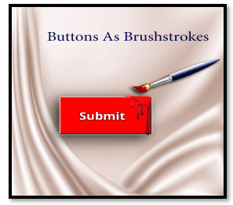
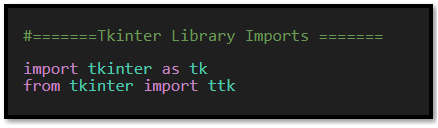

~3 Buttons as Brushstrokes~
10/27/2025

What is a Button in Tkinter
Buttons in Tkinter are like brushstrokes on a canvas. It begins a process; it starts a behavior. If you are an artist, this beginning brushstroke is your start to a stunning piece of artIn the programming world, a button brings your program to life—it initiates action.
A button on a page all by itself will just sit there. But once you move the brush—write the code—you’ll see it paint its picture and fulfill its purpose.
Where do I get these buttons?
Well, you really don’t have to go far, as long as you know how to import the tkinter library, you have access to a button, and a whole lot of other things, but let’s keep it simple today and focus on the button. We can start with the tkinter Library Imports:

Start with the same Python file from last week
Instead of starting from scratch here, we could just take the same file that we were working on last week, and then just add the code for the button to our existing code.
#=======Tkinter Library Imports =======#
import tkinter as tk
from tkinter import ttk
# Creating the visiable application window
root = tk.Tk()
# Optional: Set window properties
root.title("My Tkinter Application") # Title of the window
root.geometry("400x300") # Set the window size (width x height)
# Add widgets and define their layout here
# Example:
label = tk.Label(root, text="FRUITS")
label.pack(pady=20) # Add some padding
fruit_label = tk.Label(root, text="Select your favorite fruit:")
fruit_label.pack(pady=2) # Add some padding
fruit_dropdown = ttk.Combobox(root, values=["Apple", "Banana", "Cherry", "Date"])
fruit_dropdown.pack(pady=2) # Add some padding
def update_label(event):
selected_value = fruit_dropdown.get()
submit_label.config(text=f"You selected: {selected_value}")
fruit_dropdown.bind("<<ComboboxSelected>>", update_label)
submit_label = tk.Label(root, text="")
submit_label.pack(pady=2) # Add some padding
# This will show you the window
root.mainloop()
Creating the Button
Let’s start with the function that we will use to power up the button. The function will be simple, and we can name this function anything we want. But what we would like our function to do here, is to target the submit_label, which is the same label that we used to show the fruit selection, which you may remember from last week’s lesson, was used by the Combobox.
So, as I have already stated we will want to target that label, and then use the config method on it. We can use the config method because it is available through the library that we brought in with our import statements. So, it is already written, and we do not need to really know what it does, but it will help us in making changes to the text that is in the submit_label.
So, we use that method, and it needs to know that it is working with text, and what that text is supposed to say. So, put two things in the parenthesis, because in order for the config function to do its thing, it needs to know this stuff.
So, here is our function:
def on_button_click():
submit_label.config(text="You clicked the button!")
Now that we have our function, we can create the button.
Build the widget, which is a button. You can name the button anything you like. But for a button we have to set it to a tk.Button. Now what we want to pass to ‘our own version’ of this button is: Where we want it to be placed: root (the window), what text we want on the button(text=”Submit”), and then we need to call that button that we created in our function(command=lambda: on_button_click()).
Lastly, make sure to pack the Submit button to the screen—if you don’t, it won’t appear. We can pass a small padding to the button through the argument list.
submit_button = tk.Button(root, text="Submit", command=lambda: on_button_click())
submit_button.pack(pady=5) # Add some padding
Now if you click on Submit button, you will see the label saying ‘You clicked the button!’
Now for the Entire Code
#=======Tkinter Library Imports =======
import tkinter as tk
from tkinter import ttk
# Creating the visiable application window
root = tk.Tk()
# Optional: Set window properties
root.title("My Tkinter Application") # Title of the window
root.geometry("400x300") # Set the window size (width x height)
# Add widgets and define their layout here
# Example:
label = tk.Label(root, text="FRUITS")
label.pack(pady=20) # Add some padding
fruit_label = tk.Label(root, text="Select your favorite fruit:")
fruit_label.pack(pady=2) # Add some padding
fruit_dropdown = ttk.Combobox(root, values=["Apple", "Banana", "Cherry", "Date"])
fruit_dropdown.pack(pady=2) # Add some padding
def update_label(event):
selected_value = fruit_dropdown.get()
submit_label.config(text=f"You selected: {selected_value}")
fruit_dropdown.bind("<<ComboboxSelected>>", update_label)
submit_label = tk.Label(root, text="")
submit_label.pack(pady=2) # Add some padding
# Button widget
def on_button_click():
submit_label.config(text="You clicked the button!")
submit_button = tk.Button(root, text="Submit", height=3, width=18, bg='red', fg='white', command=lambda: on_button_click())
submit_button.pack(pady=5) # Add some padding
# This will show you the window
root.mainloop()